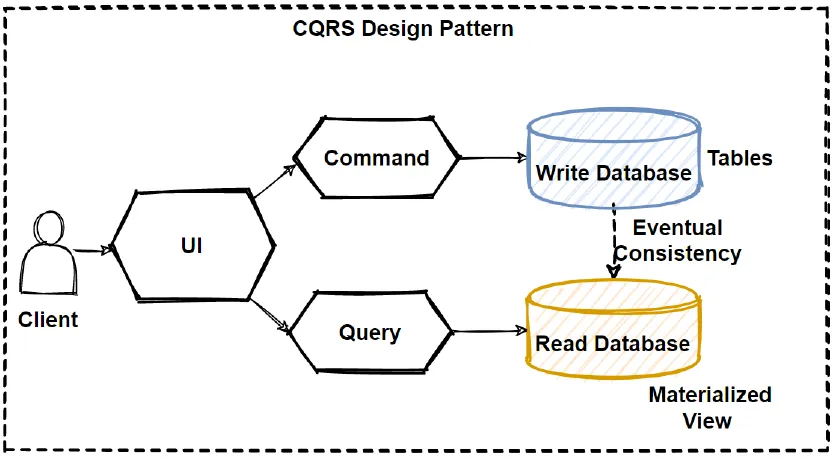
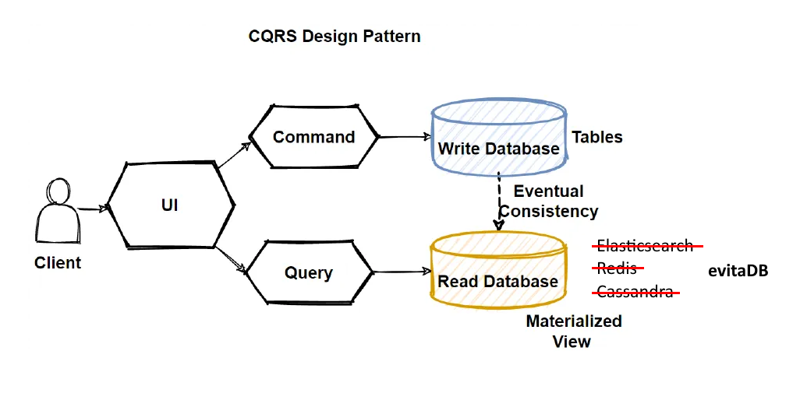
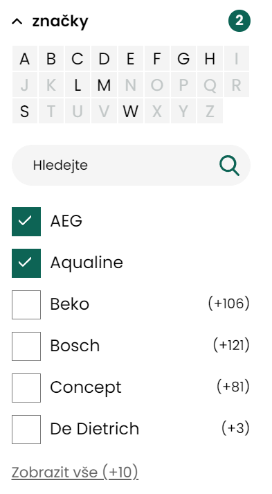
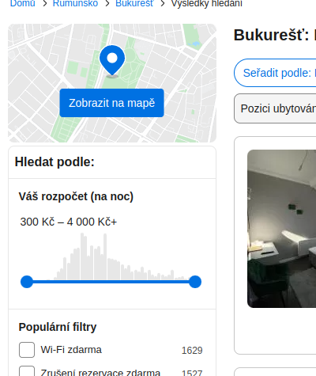

Na světě existuje obrovské množství databází a zdálo by se, že není třeba, aby vznikaly nové. Přesto se tak děje a navzdory setrvačnosti této části IT průmyslu postupně získávají značnou popularitu. Základním stavebním kamenem ve většině společností jsou staré osvědčené relační databáze. Na přelomu roku 2010 vznikla celá řada NoSQL databází, které se snažily odstranit některé nevýhody zavedených databází pro scénáře, se kterými se vývojáři setkávali při škálování a vývoji webových aplikací. Dynamická doba přinesla mnoho inovací, ale také také mnoho omylů a přešlapů v oblasti konzistence dat, schemaless přístupu nebo bezpečnosti.
Nové databáze však stále vznikají, z čehož je patrné, že hledání té pravé technologie v řadě oblastí nedošlo naplnění. Některé druhy databází, např. ty optimalizované na time-series data jako je QuestDB, Prometheus či TimescaleDB, reagují na zvyšující se požadavky v oblasti monitoringu (sledování aplikačních / síťových metrik), zatímco jiné, např. vektorové jako je Vespa.AI, Pinecone nebo Weaviate, se zrodily kvůli rozvoji umělé inteligence a potřebě ukládat a efektivně prohledávat vektorová data. Stejně bychom mohli mluvit o databázích specializovaných na fulltextové vyhledávání, prostorové vyhledávání, práci s finančními transakcemi, prohledávání grafů (sítí) a řadě dalších. Z výše uvedeného výčtu je patrné, že každá dostatečně zajímavá oblast si zaslouží vlastní specializované řešení, které akcelerují její rozvoj a zjednoduší vývojářům život.
Oblast e-commerce, na kterou evitaDB cílí, je široká. Pojďme si ji tedy zúžit na řešení, která se nazývají “storefront” – tedy to, co v Čechách nazýváme e-shopy. Aplikace v ní vyvíjené staví obvykle na některé z open-source databází s obecným zaměřením (např. PostgreSQL, MySQL apod.). S narůstající potřebou škálovat buď pokračují již zavedeným směrem pomocí přechodu na Citus či Vitess, přecházejí na nákladné pronajímané varianty jako je Amazon RDS nebo přecházejí na tzv. CQRS architekturu a implementují nějakou formu transformačního procesu dat do formy optimalizované pro čtení často spojenou s využitím speciální NoSQL databáze, která dobře škáluje (často se používá např. Elasticsearch nebo key-value databáze jako třeba Redis nebo RocksDB). Z výše uvedeného výčtu je patrné, že se ve všech případech jedná buď o databáze s obecným zaměřením, nebo databáze stavěné za úplně jiným účelem (Elasticsearch staví na Lucene, což je primárně fulltextová databáze).
 Zdroj použitého obrázku: CQRS Design Pattern in Microservices Architecture, Mehmet Ozkaya
Výzkum na Univerzitě Hradec Králové
Autoři evitaDB jsou vývojáři, kteří roky vyvíjeli své webové e-commerce aplikace na architektuře CQRS a došli k závěru, že rychlá databáze pro čtení orientovaná na potřeby e-commerce, by jim značně ulehčila život. Podařilo se jim získat výzkumný grant v jehož rámci si mohli společně s Univerzitou Hradec Králové dovolit investovat 3 roky společného výzkumu a vývoje do základu této databáze a prototypů založených na jiných veřejně dostupných databázích.
Jádrem výzkumu bylo stanovení společného API pokrývajícího všechny běžné scénáře při vývoji e-commerce katalogových aplikací. Dále pak sestavení automatizované sady funkčních a výkonnostních testů nad tímto API, které stavěly na reálných datových sadách a dotazech uložených z reálného provozu komerčně provozovaných projektů, a následně implementaci tří alternativních implementací tohoto API.
První implementace stavěla datové úložiště nad PostgreSQL, druhá nad Elasticsearch databází a třetí představovala řešení na zelené louce využívající paměťové datové struktury a vlastní implementaci diskového key/value úložiště. Výsledky měření ukázaly, že databáze napsaná na míru konkrétních požadavků dosahuje nad produkčními datovými sadami 10× až 100× lepšího výkonu (a to jak latence, tak i propustnosti).
Výzkumné prototypy jsou stále dostupné v GitHub repository a z implementací jsou vypracovány výstupní implementační zprávy (PostgreSQL, Elasticsearch, In-memory), včetně popisu a výstupů výkonnostního testování.
Umístění a použití evitaDB v CQRS architektuře
evitaDB si klade za cíl nahradit v současné době používané generické databáze pro rychlé čtení dat předpřipravených pro konzumaci frontendem. Ve výše uvedeném diagramu si ji můžeme tedy představit zde:
 Zdroj použitého obrázku: CQRS Design Pattern in Microservices Architecture, Mehmet Ozkaya
Vzhledem k tomu, že evitaDB od začátku zná své místo a svůj účel, je možné tomu přizpůsobit i její chování. Databáze předpokládá, že data v ní uložená představují sekundární podobu dat, která jsou primárně držena v jiné, pravděpodobně relační databázi. Tím pádem je potřeba, aby bylo možné tato transformovaná sekundární data co nejrychleji do evitaDB databáze zapsat. V této chvíli si ceníme rychlosti více než rizika, že o data kvůli nějaké HW poruše přijdeme – je jednoduché prostě jen nastartovat transformační proces z nulového stavu znovu. Proto evitaDB poskytuje úvodní režim, který není transakční, ale tím pádem je také mnohem rychlejší, než kdyby bylo nutné řešit všechnu režii spojenou s MVCC.
Jakmile jsou data plně připravena, je nutné je následně průběžně aktualizovat podle změn v primární databázi. K tomu slouží proces zvaný CDC (change data capture), který umožňuje průběžnou (inkrementální) indexaci změněných / přidaných údajů. V této fázi je naopak podpora transakcí pro vývojáře aplikace velmi užitečná, protože ten se pak může spolehnout na konzistenci dat v databázi a to i v případě, že data jsou zapsána na různá místa v databázi.
Už v této základní charakteristice se evitaDB liší od současných databází. Relační databáze vždy fungují v transakčním režimu. NoSQL databáze často naopak transakční buď nejsou, nebo jen v omezené míře. evitaDB si tedy bere to nejlepší z obou světů, ale pouze tak, jak je pro CQRS architekturu přirozené.
Klíčové charakteristiky databáze
evitaDB je databáze implementovaná na platformě Java, která je použitelná z libovolné jiné platformy pomocí webových API. Jedná se o NoSQL databázi, tj. její dotazovací jazyk je přizpůsobený tomu, jak se s jejími daty pracuje, a bere v potaz způsob použití z webových API. Dotaz, který sestaví Java nebo C# vývojáři na backendu, bude srozumitelný frontend programátorům zvyklým na GraphQL nebo REST JSON zápis a opačně. Jazyk je zároveň navržen s ohledem na intellisense (našeptávání) v IDE, které vývojáři běžně pro svoji práci používají.
Dotazovací jazyk je také navržen tak, aby v rámci jediného dotazu bylo možné vypočítat větší množství informací, než je tomu zvykem u jiných databází. Tím je možné dosáhnout menšího počtu dotazů a tedy i minimalizaci režie, která je s vyhodnocením každého dotazu spojená, a zároveň má databáze šanci lépe využít výpočetních mezivýsledků a optimalizovat výpočty, protože zná širší kontext klienta.
Databáze je tzv. imutabilní, často se také používá výraz “append-only”. Při zápisech do databáze se nikdy nepřepisují existující data, ale vždy vzniká nová verze záznamu, která je zapisována na konec datového souboru, a která nahrazuje verzi předchozí. Tato mechanika platí jak pro vlastní uživatelské záznamy, tak i pro všechny interní struktury databáze jako jsou indexy, které sdílí stejný datový soubor, jako uživatelská data. Databáze si v operační paměti drží informaci, na kterém místě na disku najde ten či onen záznam v odpovídající verzi.
Databáze udržuje všechny datové struktury určené k vyhodnocování dotazů (indexy) v operační paměti (konkrétně na heap) a těla vyhledaných záznamů následně načítá z key/value úložiště na disku. Databáze neumožňuje tzv. full-scan – pro každé vyhledávání vyžaduje předpřipravený vyhledávací index. Tím zabraňuje nechtěnému propadu výkonu při vyhodnocování dotazu, na který občas narážíme u relačních databází, ale zase vyžaduje od vývojářů větší předvídavost a přípravu indexů předem. Při výběru prováděcího plánu se databáze řídí náklady na jednotlivé alternativy a vybírá tu, která má šanci být nejrychlejší. Zároveň databáze obsahuje interní cache, do které ukládá výsledky často vyhodnocovaných dotazů (nebo jejich částí) a existence (části) výsledku v cache ovlivňuje i výběr plánu v optimalizátoru dotazu. Kromě dotazů jsou v interní cache ukládána i těla často dotazovaných záznamů, pro které by se jinak muselo jít až na disk a také další výpočtové struktury vázané na specializované funkce databáze. Díky provázanosti s interními indexy a jejich verzemi databázový stroj vždy ví, kdy má které části cache invalidovat.
Díky výše uvedeným charakteristikám dosahuje evitaDB při vyhodnocování dotazů řádově vyššího výkonu než jiné testované databáze.
Záznamy v databázi strukturou kombinují dokumentový a relační přístup. Záznam v databázi je nazýván “entita”, která má sadu atributů, asociovaných dat (rozsáhlejší nestrukturovaná JSON data), cen a relací na jiné entity (na úrovni relací je možné specifikovat další sadu atributů vztažených k této relaci). Entitu je možné načíst celou podobně jako dokument v dokumentově orientovaných databázích nebo jen částečně, podle potřeb klienta, ale uložení a práce s daty je optimalizovaná pro práci z pohledu katalogového frontendu. Díky nativní podpoře relací je možné načítat entity včetně dalších entit, na které se váží, do libovolné hloubky podobně, jako jsou na to vývojáři zvyklí z protokolu GraphQL.
Specializované funkce
Vzhledem k tomu, že evitaDB je orientovaná na e-commerce katalogová řešení, nabízí některé funkce, které byste u jiných databázových strojů jen marně hledali.
Parametrické filtrování
Parametrické neboli “facetové” filtrování je běžnou součástí všech katalogových řešení. Umožňuje uživatelům se lépe orientovat v široké nabídce produktů v katalogu. Kromě základní funkcionality, kterou naleznete v jiných fulltextových strojích, nabízí evitaDB výpočet tzv. dopadové analýzy (kolik produktů v nabídce by uživateli přibylo, kdyby ke stávajícímu vybranému parametru přidal parametr další). Dopadová analýza je poněkud specifická pro český trh, protože na zahraničního e-shopech ji standardně nevidíte – z našeho pohledu má však jednoznačný přínos pro uživatelskou zkušenost (UX).
 Parametrický filtr z e-shopu Senesi.cz s dopadovou analýzou
V rámci parametrického filtrování umožňuje nastavit vztahy mezi parametry v rámci jedné skupiny či mezi skupinami (disjunktivní / konjunktivní), či obecně význam zaškrtnutého parametru (pozitivní – jsou vráceny pouze položky s tímto parametrem, či negativní – jsou vráceny pouze položky bez tohoto parametru), což má dopady do výpočtu agregovaných čísel v základní i dopadové analýze.
Cílem kvalitního parametrického filtrování je pomoci uživateli rychle zúžit velký výběr položek katalogu, ale zároveň se vyhnout situaci, kdy vybraná kombinace parametrů neodpovídá žádnému z nich.
Hierarchické struktury
Většina katalogů organizuje své položky do stromové struktury pomocí tzv. “kategorií”. Proto mají stromové struktury své místo v základních datových strukturách evitaDB. Na položky katalogu se uživatel typicky dívá z pohledu vybrané kategorie a jejich subkategorií. Řešení stromových struktur v databázi není bez komplikací (o řešení této problematiky v relačních databázích vyšel svého času na Zdrojáku vlastní seriál – podpora rekurze v nich často naráží na výkonnostní problémy, ani NoSQL databáze v tomto nejsou výjimkou).
E-commercové aplikace mají často ještě náročnější požadavky na stromové struktury. Ukazuje se jako praktické, pokud engine dokáže řešit takové situace, jako je vyloučení specifických podstromů z vyhledávacího dotazu (např. proto, že je daná kategorie teprve “v přípravě”), což při možnosti zařadit jednu položku do více různých kategorií (potenciálně jak viditelné, tak i neviditelné) dělá z výpočtu netriviální záležitost.
Další z užitečných funkcí je možnost zpětně vygenerovat podklady pro zobrazení menu, pokrývajícím položky, které odpovídají vyhledávací podmínce, tj. automaticky vyloučit ty kategorie, které by uživateli nenabídly žádné položky.
Ceníky
evitaDB cílí obecně na katalogová řešení se specializací na e-commerce. Proto má v základním dotazovacím jazyku i konstrukty pro obecné cenové propočty. Při splnění určitých předpokladů dokáže databáze spočítat koncovou cenu pro zákazníka a následně třídit a filtrovat podle této ceny. Předpokladem je dekompozice cenové politiky obchodníka do sady ceníků seřazených dle priority uplatnění a z opačné strany výběr ceníků platných pro konkrétního uživatele. Z našich zkušeností vyplývá, že do takto zjednodušeného modelu lze převést valnou většinu na první pohled i komplikovaných cenových politik obchodníků jak v B2C, tak i v B2B oblasti. Databáze interně pracuje jak s cenami s daní, tak bez a v různých měnách.
Při výpočtech myslíme i na situace specifické pro e-shopy – tj. řešení “variantních produktů”, kdy ve výpisech sadu příbuzných produktů, tzv. variant, zastupuje jeden virtuální produkt. Varianty ovšem mohou nabývat různých cen, a proto je se pak u zástupného produktu musí při filtraci zohledňovat libovolná z prodejních cen variant. Podobná situace je i u tzv. kompletů, kdy cena výsledného produktu je součtem cen jeho součástí (ty mohou být pro každého uživatele různé a proto není možné ceny kompletů předpočítávat).
Lokalizace
Atributy a asociovaná data mohou být tzv. lokalizovaná – tedy mít různé hodnoty na základě jazyka zvoleného uživatelem. Při vyhledávacích dotazech je možné specifikovat jazyk uživatele a nalezené entity budou automaticky obsahovat data v jazyce preferovaném daným uživatelem. Lokalizaci dat je možné použít i pro řešení rozdílů mezi imperiálními a metrickými jednotkami.
Ačkoliv se zdá být lokalizační problém jako triviální k řešení libovolnou databází, v širším kontextu dotazovacího jazyka a webových API dává jeho přímá podpora databází smysl. V e-commerce prostředí je navíc lokalizace běžným požadavkem.
Histogramy
Součástí každého vyhledávacího dotazu mohou být vypočtené histogramy cen či atributů. Tuto funkci mnoho webových katalogů nemá – v současné době jej můžete vidět například při filtraci ceny na serveru Booking.com:
 Histogram pro výběr ceny na Booking.com
Fulltextové / sémantické vyhledávání
Databáze v současné době nepodporuje fulltextové či sémantické (vektorové) vyhledávání. Je tedy stále nutné pro tuto část aplikace využívat některé z externích řešení. Do budoucna s integrací této funkce počítáme, protože je pro katalogová řešení běžná.
Webová API
Databáze má integrovaná webová API, která lze selektivně povolovat či vypínat dle potřeby konkrétních projektů a jejich týmů. Ihned po vytvoření schématu v evitaDB jsou data i schéma dostupná na všech povolených webových API bez nutnosti další práce vývojáře. Dokumentace a nastavení evitaDB schématu se beze zbytku zužitkuje při generování webových schemat.
GraphQL
GraphQL je protokol, který se velmi dobře používá z JavaScriptových knihoven či mobilních aplikací. Je moderní a při návrhu API evitaDB jsme se z něj v mnohém inspirovali. Vygenerované GraphQL schéma respektuje uživatelské názvy entit, atributů a dalších struktur definovaných ze strany aplikace a snaží se co nejvíce přiblížit struktuře GraphQL API, které by si psal vývojář sám. Tj. pokud v evitaDB schématu vytvoříte entitu s názvem `product`, v GraphQL API se vám objeví metody `getProduct`, `listProduct` a `queryProduct`.
REST
REST je alternativa ke GraphQL, která má mnoho slabých míst, přesto je však díky svému “stáří” a jednoduchým principům obecně velmi rozšířený protokol, který je možné jednoduše konzumovat prakticky z libovolného programového prostředí. Pokud je zapnutá podpora REST protokolu, je pro každé schéma v evitaDB okamžitě dostupný popis REST API v Open API schématu, které je možné použít k vygenerování dokumentace, popřípadě skeletu komunikačního rozhraní pro klienta. Principy návrhu REST API jsou podobné jako u protokolu GraphQL a respektují názvosloví cílové aplikace.
gRPC
gRPC protokol je rychlý, binární protokol od Google využívající na serializaci dat formát Protocol Buffers. Protokol je velmi často používán při implementaci microservices a obecně je používán spíše na straně backendu.
My jsme gRPC protokol zvolili jako systémový protokol, nad kterým chceme budovat naše “klienty” a používat ho do budoucna i obecně na dorozumívání mezi jednotlivými instancemi evitaDB (např. při distribuovaném provozu).
Nic však nebrání tomu, aby nad tímto protokolem vznikaly další klientské knihovny na platformách, které my sami z kapacitních důvodů zatím podporovat nemůžeme.
Klientské knihovny
Aktuálně s evitaDB dodáváme dvě klientské knihovny:
Java
Nativní Java API umožňuje jednoduchou komunikaci bez prostředníka. Díky tomu, že databáze sama je napsána v jazyce Java (konkrétně na verzi Java 17), je možné ji provozovat i jako tzv. “embedovanou” databázi – tj. databázi, která běží ve stejném procesu jako samotná aplikace, která ji využívá. Tento režim je velmi šikovný pro psaní integračních testů aplikace. Naše vlastní integrační testy (aktuálně téměř 5 tisíc) mohou díky tomu běžet paralelně a na našich vývojářských strojích doběhnout okolo jedné minuty od spuštění. Stejnou podporu pro integrační testování pak můžete využít i pro testování vašich vlastních aplikací.
Vedle toho je možné identické API použít i pro vzdálenou komunikaci mezi aplikací a evitaDB serverem běžícím jako proces na stejném nebo jiném stroji. Ke komunikaci mezi klientem a serverem se používá protokol gRPC. Přepnutí mezi embedovaným a vzdáleným režimem je v aplikaci otázka několika málo řádků a díky stejnému API může zbytek vaší aplikace zůstat zcela beze změny.
C-Sharp
C# klient je vytvářen ve spolupráci s Univerzitou Hradec Králové a má jít o potvrzení multiplatformnosti našeho gRPC API a ověření, že jeho návrh je dobře použitelný i z jiné platformy než je Java.
C# klient je v současné době umožňuje využít všechny možnosti evitaDB a je plnohodnotnou alternativou k Java API. Na tomto klientu jsme si ověřili, že implementace i komunikace mezi různými platformami je funkční, že API i dotazovací jazyk v C# podobě vypadá velmi podobně tomu v Javě.
Na co se databáze nehodí
evitaDB je specificky zaměřená na katalogová řešení, ideálně v e-commerce. Nesnaží se být “obecně” použitelnou databází na široké spektrum požadavků, ale orientuje se na tento úzký způsob použití.
Díky tomu, že indexy jsou drženy v paměti, se nehodí na tzv. “big data”. Databázi testujeme na stovkách tisíc až jednotkách milionů produktů a navázaných dat. Schéma se 120 tisíci produktů, 3. mil cen a cca 4 mil. atributů, 700 tisíc asociovaných dat a 1 mil. vzájemných referencí vyžadovala cca 10GB RAM pro paměťové indexy. Čísla jsou pouze orientační – záleží vždy na struktuře a bohatosti dat a je nutné vše vyzkoušet a změřit na vašich vlastních datech.
Do budoucna jsme s požadavky na paměť optimističtí. V nových verzích Java platformy se připravují změny, které by měly vést k nižším nárokům na paměť z pohledu platformy (projekty Lilliput a Valhalla) a i my máme v rukávu ještě několik možných optimalizací.
Licence a stav vývoje
evitaDB je vydávána pod BSL licencí, což sice technicky není open-source licence, ale ve vztahu k OSS velmi přátelská. V rámci BSL licence můžete evitaDB použít k libovolným ne-komerčním či komerčním účelům na libovolném množství serverů s výjimkou poskytování evitaDB jako DaaS. Čtyři roky starý zdrojový kód navíc automaticky přechází na OSS licenci Apache Commons v.2, která je prakticky bez omezení.
evitaDB je v současnosti v tzv. “alfa” verzi. Vyhrazujeme si právo do finálního vydání ještě řadu věcí změnit, i když už nyní je jasné, že valná většina principů a API zůstane stejná. V letošním roce nasadíme evitaDB do produkce na našich vlastních projektech a příští rok budeme na tuto databázi migrovat naše další klienty. Databáze, kterou tedy dostanete do rukou, bude minimálně prověřena naší vlastní zkušeností v produkčních prostředích. Uvědomujeme si, že prověření databáze praxí je klíčový aspekt, a nedůvěra k novým technologiím může řadu z vás odradit, ale této fázi se bohužel nedá nijak vyhnout.
Co můžete očekávat od tohoto seriálu?
Tento článek je úvodním dílem delšího seriálu, ve kterém bychom vás chtěli seznámit s jednotlivými zákoutími této databáze v češtině. Veškerá dokumentace databáze a dalšího obsahu je primárně vytvářena v angličtině, protože bychom byli rádi, aby evitaDB jednoho dne překročila hranice naší země a stala se užitečnou i v zahraničí. Pro řadu vývojářů však stále může být angličtina hůře stravitelná a proto chceme její adopci v ČR podpořit právě tímto seriálem článků. Těšíme se, že touto cestou projdeme společně a že dáte naší databázi šanci a vyzkoušíte ji na svých projektech.
V dalším článku této série si ukážeme zprovoznění databáze na vašem počítači, popíšeme si strukturu dat v evitaDB, založíme si nová schémata a do nich i pár ukázkových záznamů. Vyzkoušíme si přístup k datům přes webová API a podíváme se na ně skrz naši webovou laboratoř.